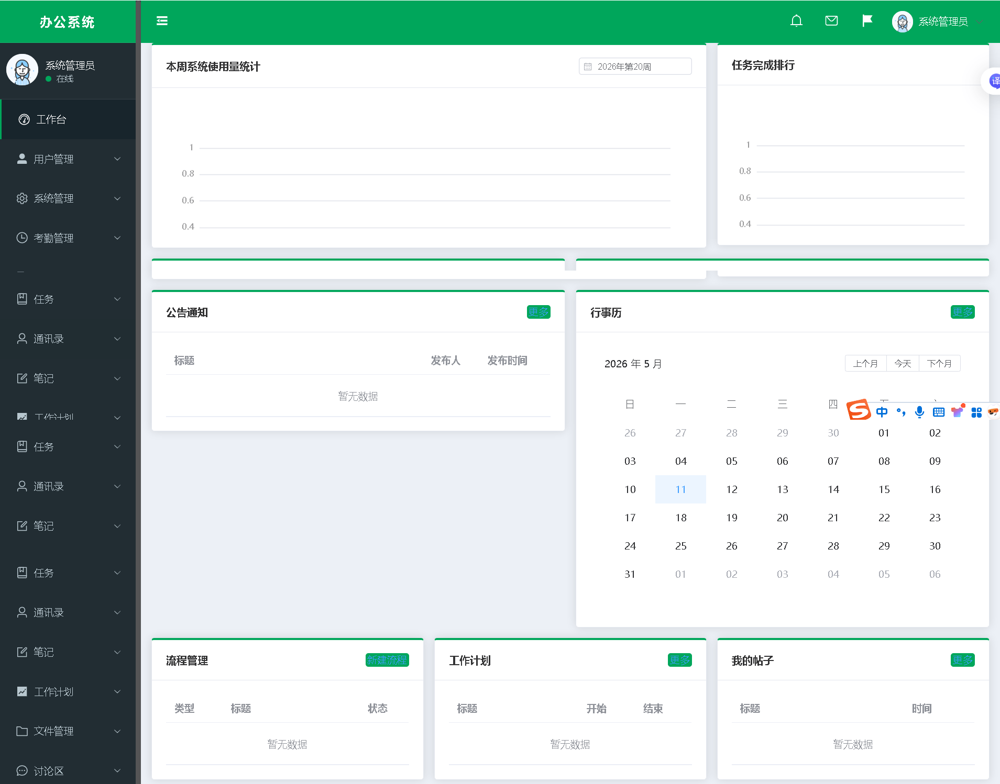
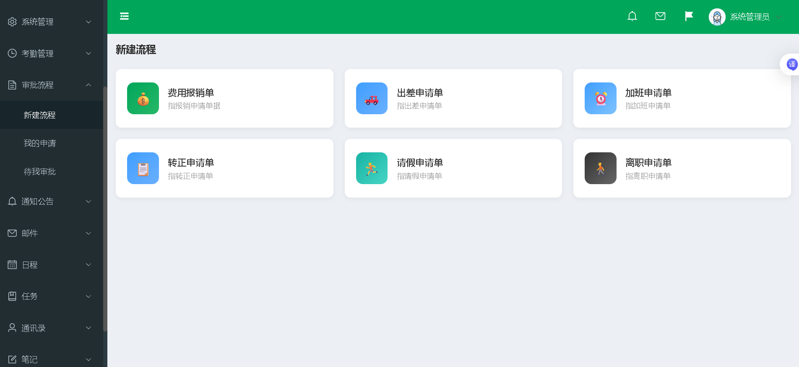
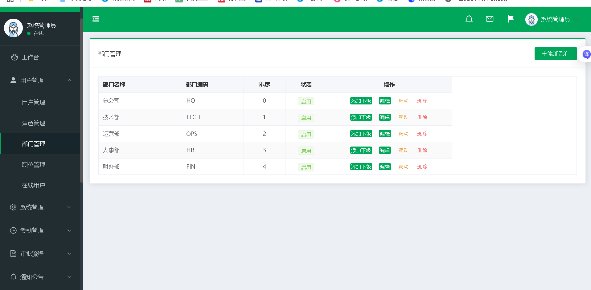
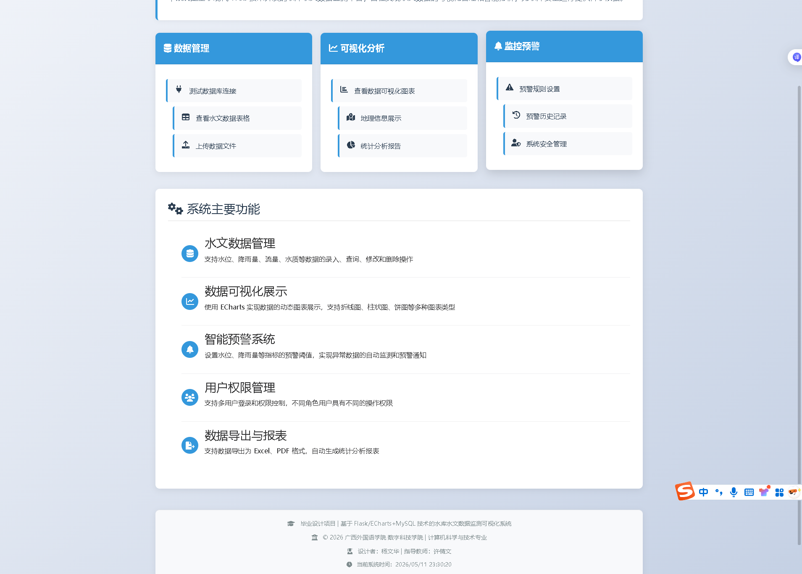
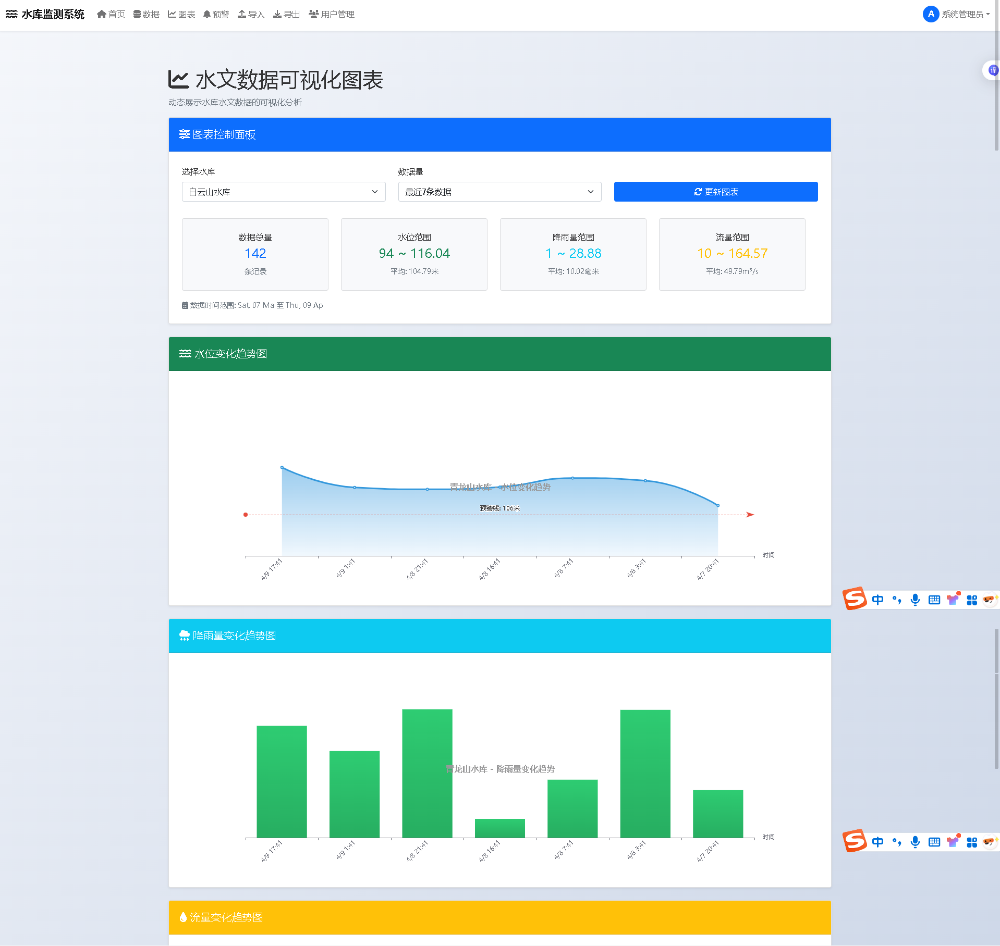
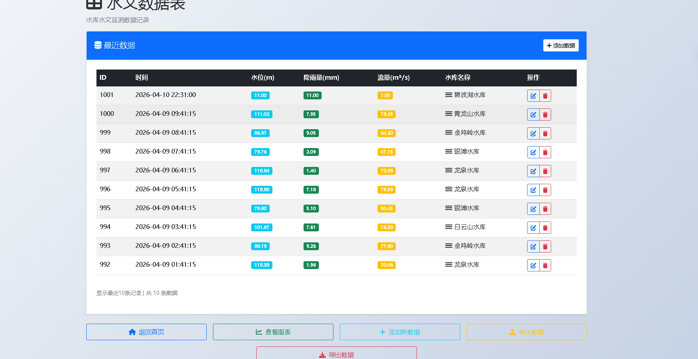
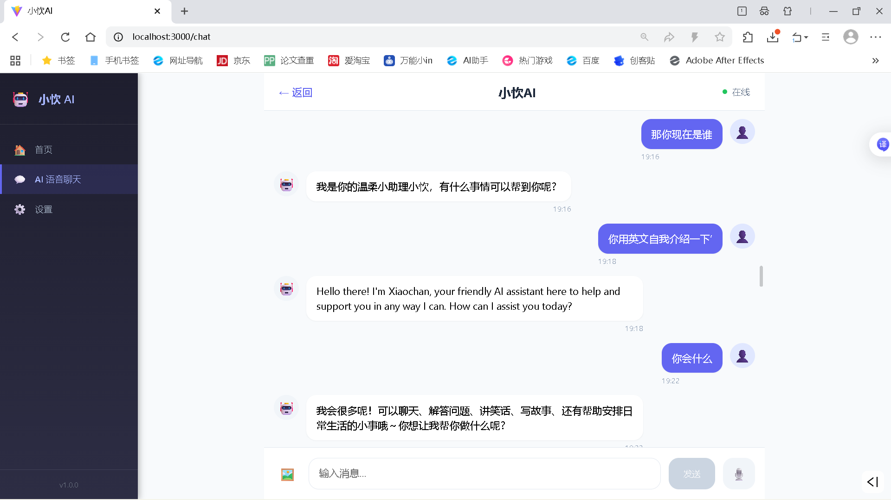

求职方向：前端 / 全栈开发 | 2026 应届生
GitHub：https://github.com/yangwenhua212







HTML / CSS / JavaScript / Vue3 / Axios / Node.js / SpringBoot / Flask / MySQL / Git / ECharts / Python / FastAPI / Ollama
邮箱：2125020062@qq.com